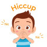

Hiccups
Rx
1.Tab Baclofen 10mg N=30 q8h
Or Cap Gabapentin 100mg N=30 q8h
Or Amp Chlorpromazine 50 mg /2ml N=1 IM
Or Tab Metoclopramide 10mg N=10 q8h
نکته1: حبس کردن نفس و انجام مانور والسالوا ممکن است در بهبود سکسکه موثر باشد
نکته2: در موارد طول کشیده(بیشتر از 48ساعت) و مقاوم به درمان نیاز به بررسی بیشتر دارد
Central nervous system disorders
1️⃣ انسفالیت
2️⃣ مننژیت
intracranial and brainstem mass 3️⃣
MS 4️⃣
5️⃣ هیدروسفالی
Vagus and phrenic nerve irritation
1️⃣ فارنژیت
2️⃣ لارنژیت
3️⃣ توده گردنی
4️⃣ توده مدیاستن
5️⃣ Abnormalities of the diaphragm that irritate the phrenic nerve
6️⃣ Foreign bodies in contact with the tympanic membrane that irritate the auricular branch of the vagus
Gastrointestinal disorders
gastric distention 1️⃣
2️⃣ گاستریت
GERD 3️⃣
diaphragmatic eventration (protrusion) 4️⃣
peptic ulcer disease 5️⃣
6️⃣ پانکراتیت
7️⃣ کنسر پانکراس
8️⃣ کنسر معده
9️⃣ آبسه شکمی
🔟 gallbladder disease
IBD 1️⃣1️⃣
1️⃣2️⃣ هپاتیت
aerophagia 1️⃣3️⃣
esophageal distention 1️⃣4️⃣
esophagitis 1️⃣5️⃣
Thoracic disorders
(lymph nodes (infection or neoplasm 1️⃣
2️⃣ پنومونی
3️⃣ آمپیم
4️⃣ برونشیت
5️⃣ آسم
6️⃣ پلوریت
7️⃣ آنوریسم آئورت
8️⃣ مدیاستینیت
9️⃣ تومور مدیاستن
🔟 تروما قفسه سینه
Cardiac disorders
MI 1️⃣
Pericarditis 2️⃣
Toxic-metabolic or drug-related disorder
1️⃣ اورمی
2️⃣ هیپوناترمی
Postoperative
general anesthesia 1️⃣
intubation (with glottic stimulation) 2️⃣
visceral irritation 3️⃣
Drug-related
diazepam 1️⃣
2️⃣ barbiturates
dexamethasone 3️⃣
certain chemotherapeutic agents 4️⃣
alpha methyldopa 5️⃣
Psychogenic factors
anxiety 1️⃣
stress 2️⃣
excitement 3️⃣
malingering 4️⃣
تصویری برای این نسخه موجود نیست.